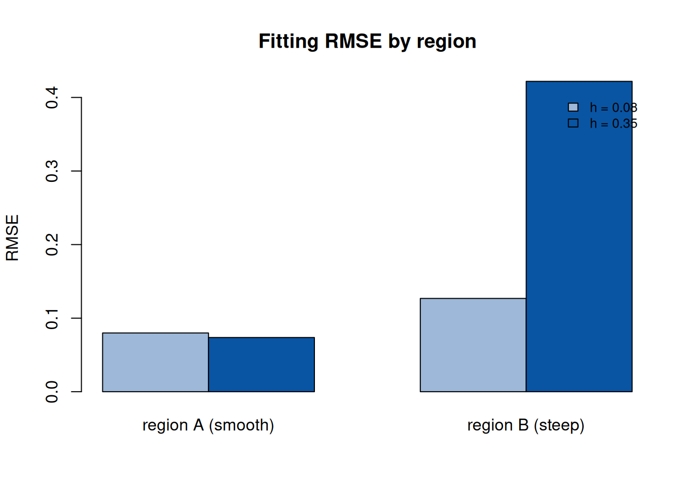

第 7 异窗宽 GTWR 模型
本章整理自：侯健, 王芝皓, 田茂再, 窦燕. 基于异窗宽 GTWR 模型的商品 住宅价格影响因素研究. 数理统计与管理, 2022, 41(06): 1003-1014 (侯健 et al. 2022)。
7.1 GTWR 模型
时空地理加权回归（GTWR）在 GWR (Fotheringham et al. 1996) 的基础上引入时间属性 (Huang et al. 2010)：
\[\begin{equation} Y_i = \beta_0(u_i, v_i, t_i) + \sum_{j=1}^{p} \beta_j(u_i, v_i, t_i) x_{ij} + \varepsilon_i, \qquad i = 1, \dots, n, \tag{7.1} \end{equation}\]
其中 \((u_i, v_i, t_i)\) 为第 \(i\) 个样本的空间坐标（经纬度）与时间戳。 参数估计采用局部最优思想下的加权最小二乘：对任意样本点处的回归 系数 \(\beta\)，目标函数为
\[\begin{equation} \beta = \arg\min_{\beta}\ (Y - X\beta)^\top W_j (Y - X\beta), \tag{7.2} \end{equation}\]
\(W_j = \mathrm{diag}(w_1^j, \dots, w_n^j)\) 为同窗宽时空权重矩阵， 权重由时空距离与核函数决定。时空距离
\[\begin{equation} d_{ij}^{ST} = \sqrt{\lambda\bigl[(u_i - u_j)^2 + (v_i - v_j)^2\bigr] + \mu (t_i - t_j)^2}, \tag{7.3} \end{equation}\]
通过参数 \(\lambda, \mu\) 调节空间距离与时间距离的相对重要性，核函数 可取 Gauss 核 \(K(d) = \exp(-d^2/h^2)\) 或 Bisquare 核。
7.2 异窗宽的动机与定义
同窗宽设定让所有样本共用同一个 \(h\)，隐含”样本受地理位置影响在各 因素上相同”的假设；而实际研究中不同地理区域、不同因素对窗宽的 敏感度差异很大。论文将研究区域划分为 \(m\) 个子区域，每个子区域 \(k\) 使用自己的窗宽 \(h_k\)，得到异窗宽时空权重矩阵
\[\begin{equation} W_D = \mathrm{diag}(W_1, W_2, \dots, W_m), \qquad W_k = \mathrm{diag}\bigl(w_{k1}(h_k), \dots, w_{kn_k}(h_k)\bigr), \tag{7.4} \end{equation}\]
第 \(k\) 个子区域内回归系数的估计为
\[\begin{equation} \hat\beta_{Dk} = \arg\min_{\beta}\ \bigl\|\sqrt{W_k}\,(Y_k - X_k \beta)\bigr\|_2^2, \qquad k = 1, \dots, m. \tag{7.5} \end{equation}\]
子区域的划分采用标准差椭圆分类算法：对每个指标计算其空间分布 的标准差椭圆，依据椭圆的重叠与形态特征把样本聚成若干同质子区域， 从而让每个区域内的样本在空间影响结构上更一致。
7.3 数值演示
演示同窗宽与异窗宽在”空间异质性强度不同的子区域”上的差异：两个 子区域，一个效应变化平缓、一个变化剧烈。固定窗宽对平缓区域过拟合、 对剧烈区域欠拟合；而异窗宽各自取最优窗宽，总体拟合更优。
set.seed(2026)
# 两个子区域：A 效应平缓（b 随 u 缓慢变化），B 效应剧烈（b 快速变化）
nA <- 100; nB <- 100
uA <- runif(nA, 0, 1); uB <- runif(nA, 0, 1)
xA <- rnorm(nA); xB <- rnorm(nB)
bA <- 1 + 0.5 * uA # 平缓变化
bB <- 1 + 4 * uB # 剧烈变化
yA <- bA * xA + rnorm(nA, sd = 0.3)
yB <- bB * xB + rnorm(nB, sd = 0.3)
# 局部加权（Gauss 核）拟合变系数，比较窗宽影响
gauss_w <- function(d, h) exp(-(d / h)^2)
local_fit <- function(u, x, y, u0, h) {
w <- gauss_w(abs(u - u0), h)
sum(w * x * y) / sum(w * x^2)
}
grid <- seq(0, 1, length.out = 40)
rmse_h <- function(h) {
predA <- sapply(grid, function(u0) local_fit(uA, xA, yA, u0, h))
predB <- sapply(grid, function(u0) local_fit(uB, xB, yB, u0, h))
trueA <- 1 + 0.5 * grid; trueB <- 1 + 4 * grid
c(A = sqrt(mean((predA - trueA)^2)), B = sqrt(mean((predB - trueB)^2)))
}
h_small <- rmse_h(0.08); h_large <- rmse_h(0.35)## region A (smooth) region B (steep)
## small_h 0.07983734 0.1268103
## large_h 0.07365053 0.4219027
图 7.1: 小窗宽与大窗宽在两个子区域上的拟合 RMSE：异窗宽可取各自最优
结果显示：小窗宽在平缓区域 A 过拟合（RMSE 较大），大窗宽在 剧烈区域 B 欠拟合。单一窗宽无法同时适应两个区域，而异窗宽设定 （A 取大窗宽、B 取小窗宽）能在每个区域达到更优的偏差-方差平衡—— 这正是论文在商品住宅价格实证中，异窗宽 GTWR 优于同窗宽 GTWR 的 机制。论文还结合标准差椭圆分类算法划分区域，并讨论了各影响因素 （如区位、面积、朝向等）在不同区域的作用差异。
7.4 要点小结
- GTWR 通过时空距离 (7.3) 同时度量空间与时间邻近性， 是时空回归的基准模型；
- 同窗宽的隐含假设过于严格，异窗宽设定 (7.4) 允许各子 区域有各自的平滑尺度；
- 标准差椭圆分类算法为”在哪里划分、划分几类”提供了数据驱动的 依据；异窗宽估计 (7.5) 仍是逐区域的加权最小二乘， 计算简单。